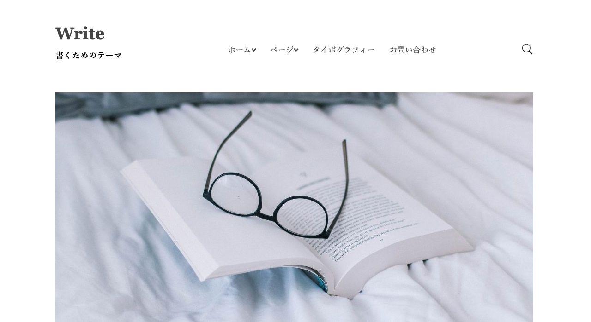
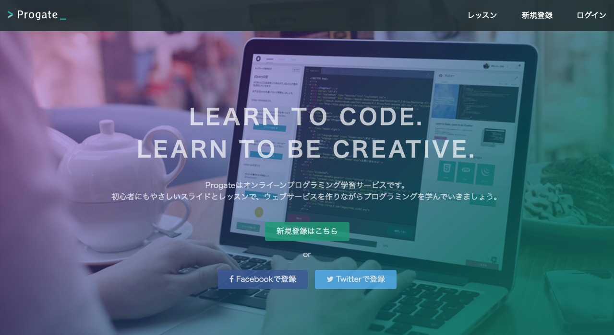
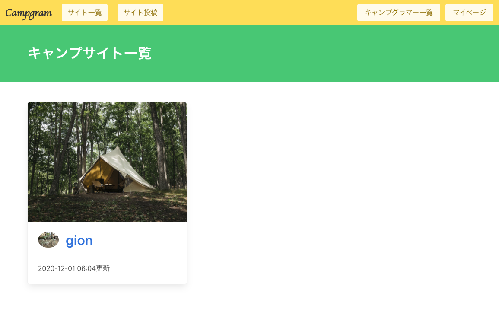

ABOUT
祇園 岳範
Takenori Gion
1991.12.18
京都府京都市 在住
学生時代、情報システム科にてネットワークとプログラミングの基礎を学び、
販売会社に就職後、自社店舗のコンサルタントとして働く。
Webページ製作の経験と、運営マネジメントの経験を活かした
人の役に立てるSEを目指し、独学で勉強を開始する。
『サービスを通じて想いを繋げ、新しい価値観を創造するお手伝いができれば。』
と考えてます。
|
SERVICE

・Write
Blog型Webページです。
模写コーディングを通じてHTML/CSSの習得に取り組みました。

・Progate
LP型Webページです。
プロゲートを通じてのレスポンシブデザインの習得に取り組みました。
・Fashion
架空のファッションブランドページです。
JSを用いて、ページ内リンクを実装しました。

・Campgram
キャンプ画像投稿サイトです。
キャンプの思い出や、キャンプ場の情報がシェアできます。(rails)